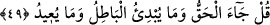
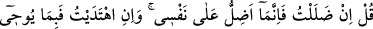
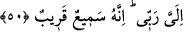
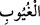
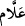

olanları, hattâ kıyâmete kadar herkesin evlâdlarının gönlünde olacakları bildiği için
burada “ kelimesi çoğul olarak zikredilmiştir. Yine bir hal O’nu başka bir halden
alıkoymayacak şekilde, mâlûmât bir halden başka bir hâle değiştiğinde ilminde
değişiklik olmaksızın, muhtelif hallerdeki gaybların mâlumâtını olduğu gibi Allah’ın
ilminin içine alması için mübâlağa lafzıyla “ buyrulmuştur.
49. De ki: “Hak geldi; artık bâtıl ne bir şeyi başlatabilir ne de geri getirebilir.”
“De ki: Hak” yâni İslâm ve tevhid “geldi; artık bâtıl ne bir şeyi başlatabilir ne de
geri getirebilir.” Yâni şirk hiçbir izi kalmayacak şekilde zâil olup gitti.
Bu söz, canlı olan bir şeyin helâkinden ve yok olup gitmesinden alınmıştır. Çünkü
canlı bir şey helak olup gidince artık onun bir şeyi başlatmaya ve geri getirmeye imkânı
kalmaz. Onun için bu ifâde bir şeyin tamamen yok olup gitmesi için bir mesel olmuştur.
İbn Mes’ûd (r.a.)’ın rivâyet ettiğine göre Hz. Peygamber (s.a.) Mekke’yi fethedip
şehre girdiğinde Kâbe’nin çevresinde 360 put vardı. Elindeki bir değnekle putlara
dürtüyor ve “Hak geldi, bâtıl yıkılıp gitti. Zâten bâtıl yıkılmaya mahkumdur.” (el-
İsrâ, 17/81) “Hak geldi; artık bâtıl ne bir şeyi başlatabilir ne de geri getirebilir.”
diyordu.[42]
50. De ki: Eğer (haktan) saparsam, kendi aleyhime sapmış olurum. Eğer doğru
yolu bulursam, bu da Rabbimin bana vahyettiği (Kur’an) sayesindedir. Şüphesiz O,
işitendir, yakındır.
“De ki:” Sizin iddiâ ettiğiniz ve “sen babalarının dinini terkettiğin zaman elbette
sapıttın” dediğiniz gibi “Eğer” ben hak yoldan “saparsam, kendi aleyhime sapmış
olurum.” Çünkü sapmamın vebâli kendi aleyhimedir. Çünkü sapıklığın sebebi nefistir.
Sapıklığa sevkeden ve kötülüğü fazlasıyla emreden bizzat odur.
“Eğer doğru” hak “yolu bulursam, bu da Rabbimin bana vahyettiği” hikmet ve
beyan “sâyesindedir.” sebebiyledir. Çünkü hakkı bulmak/hidâyet Allah’ın muvaffak
kılması ve hidâyeti iledir.
Burada işâret vardır ki dalâletin kaynağı insanın nefsidir. Nefis kendi tabîatına
bırakılınca ondan ancak sapıklık meydana gelir. Hidayet ise Hak Teâlâ’nın